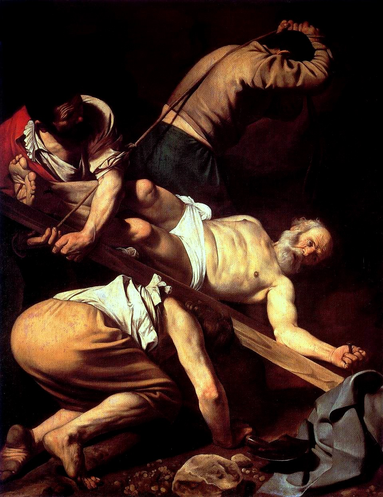

Descrizione
Era il 1788, e fu il colonnello John Campbell a richiedere esplicitamente una scultura raffigurante gli amanti di cui parla Apuleio. Lo scultore si mise immediatamente all’opera per realizzare una delle più grandi immagini di amore e passione, e così cominciò a studiare anche i precedenti lavori con protagonisti i due amanti.
Scoprì un antico affresco di Ercolano, e guardandolo da vicino, ebbe la straordinaria intuizione per la posizione definitiva dei protagonisti della sua futura opera.
Nel 1788 gli studi preparatori erano completati e l’opera di Canova Amore e Psiche, era pronta per essere realizzata nel marmo.
Nel 1793 la statua era completa, ma ci fu un problema: il colonnello Campbell, che aveva commissionato l’opera, non aveva abbastanza denaro per far trasportare il capolavoro in Inghilterra, e così venne acquistata da Gioacchino Murat, che la trasportò nel suo palazzo vicino Parigi.
In questa immagine di amore si percepisce appieno il gusto neoclassico tipico di Canova: per far risaltare la perfezione delle forme ed il richiamo alle antiche statue greco-romane, i protagonisti sono completamente nudi e c’è solo un piccolo velo che copre il ventre di Psiche.
Ci sono anche altri elementi che rendono Amore e Psiche Canova, un eccellente esempio di scultura neoclassica: i movimenti dei due protagonisti formano una croce molto leggera.
Questa croce è molto importante, poiché nel centro dove le due linee si intersecano, c’è anche il centro focale dell’opera, ovvero dove il tuo sguardo cade appena guardi la scultura.